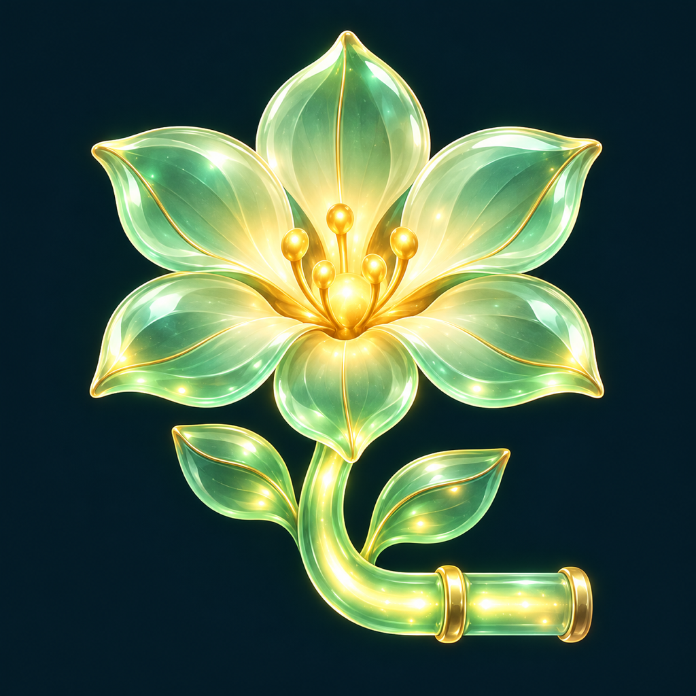

Follow the light.
Let flowers bloom.
Luma Garden is a gentle puzzle game about connecting sunlight and bringing a garden to life.
iPhone · iPad / iOS 17+ · In development
60 little gardens
Five campaign chapters of light-path puzzles, plus a fresh daily garden.
Six flower stories
Discover real flowers, their meanings, botanical details and sources.
A garden of your own
Plant your flowers in three spots and share a card of your completed puzzle.
Need a hand?
Tell us your device model, iOS and app versions, and the affected garden.
Please remove personal information from screenshots.
Frequently asked questions
How do I play?
Tap tiles to rotate them and connect the little sun to every path and flower. Windmill tiles introduced from garden 13 rotate 180 degrees per tap.
How do I unlock and plant flowers?
Complete campaign gardens to unlock six real flower species. The collection shows your next goal. Place unlocked flowers in three home-garden spots and open their entries for meanings, botanical information and sources.
Where is my progress saved?
Garden progress, stars, flower placements and preferences are saved on your device. The app has no account or server-sync service. Deleting the app removes its local records; the developer cannot restore them.
How do hints and ads work?
Each puzzle has one free hint. Additional hints require earning a reward in an optional rewarded ad. An interstitial may appear when moving to the next campaign garden. Ad failures do not block that transition. Daily gardens do not show interstitials.
Can I play offline?
Puzzles and local saving work offline. Ads, consent checks and external flower-source links require internet access. Rewarded hints are unavailable when an ad cannot load.
When does the daily garden change?
At midnight UTC, which is 9 a.m. in Korea.
Where are sound, haptics and privacy options?
Use the in-app settings for sound and haptics; also check device volume and Silent mode. Advertising privacy options appear in settings when required by the consent service.
Are flower meanings universal?
Meanings vary across cultures, periods and sources. Each flower entry provides context and source links.